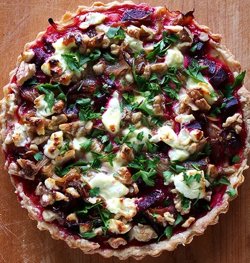

Beet, Goat Cheese and Walnut Tart
This Beet, Goat’s Cheese, and Walnut Tart is a perfect balance of earthy, creamy, and nutty flavours, encased in a crisp, buttery pastry. Roasted beets bring a natural sweetness, complemented by the tangy richness of goat’s cheese and the crunch of toasted walnuts. A touch of honey and fresh thyme enhances the depth of flavour, making it an elegant yet simple dish for any occasion. Whether served warm or at room temperature, this tart is a delicious centre piece for brunch, lunch, or a light dinner.
Ingredients
For the tart dough:
- 1½ cup all-purpose flour
- ½ teaspoon kosher salt
- 10 tablespoon unsalted butter, cut into small cubes and well chilled
- 4-5 tablespoons ice water
For the tart recipe:
- 2-3 small beets (Note: Since you are roasting beets, you may as well roast a few more. When assembling the tart, I used about 2 heaping cups of diced beets)
- Kosher salt and freshly ground black pepper
- 1 tablespoon unsalted butter or olive oil
- 1 medium onion, thinly sliced
- 2 tablespoons dry white wine (or Sherry or Madeira — whatever you have on hand)
- 1 recipe tart dough (above)
- 3 large eggs
- ¾ cup heavy cream (I used buttermilk)
- 4 ounces fresh goat cheese (I used less. Add according to taste/preference.)
- 1 cup chopped walnuts (I used less. Add according to taste/preference.)
- 1 tablespoon walnut oil (Optional — I did not use.)
- About 2 tablespoons chopped fresh parsley
Instructions
For the dough:
- In a mixing bowl, combine the flour and the salt. Quickly cut the butter into the flour, using a pastry blender or the back of a fork, until the butter pieces are the size of large peas. (Alternatively, cut the butter into the flour by pulsing it 8 to 10 times in a food processor, being careful not to overheat and over mix the butter.)
- Add the ice water. Using just your fingertips and working quickly, combine the flour mixture and the water. Work just until the water is absorbed. The dough will be ragged but should hold together when you squeeze it. If it seems dry, sprinkle on a few more drops of water. (I had to add a few more tablespoons of water.)
- Gather the dough up into a ball — it’s fine if the dough does not come together completely at this time. Wrap the dough well in plastic wrap, flatten it a bit, and let it rest in the refrigerator for at least a half hour before rolling. The dough will keep in the refrigerator for up to 2 days. You can also freeze the dough, well wrapped; allow it to defrost for a day in the refrigerator before using it.
- Preheat the oven to 375ºF. Roll the dough into a large circle — large enough to overlap whatever sized tart pan you are using. Press the dough into the corners and into the sides of the tart pan. Trim off any excess dough. Line the tart with plastic wrap and fill with dried beans or pie weights. Fold plastic up and over to expose the crust. Bake for 20 minutes. Remove from oven. Remove beans from tart.
For the tart:
- Heat the oven to 450°F. Wash the beets. Place the beets in a small ovenproof pan (like a brownie pan or a pie plate.) Add water to reach 1/8-inch up the sides. Cover the pan tightly with aluminum foil. Bake until the beets are tender when pierced with a paring knife, about 45 minutes.
- Allow the beets to cool. (Or not). Rub the skins off of the beets with your fingers, then dice the beets into small cubes. (Be careful, as beet juice can stain counters, towels, and even your hands; you may want to wear gloves for this step.)
- Heat the butter in a sauté pan over medium heat. Add the onion, season with a little salt, and cook, stirring every few minutes, until the onion is just tender, about 7 minutes. Add the alcohol and cook for another minute, scraping up any browned bits stuck to the bottom of the pan. (Note: I caramelized my onions a bit more — cooked them slowly for about 25 minutes.)
- Heat the oven to 350°F. Add the beets and onions to the blind-baked tart shell. (Note: I added the walnuts at this step as well, but the author adds them after the tart has already baked for 20 minutes. Your call.)
- Whisk together the eggs and cream (or buttermilk), season with a pinch of salt and pepper, and carefully pour over the beets and onion, letting the mixture seep evenly into the beets. Dot the goat cheese all over the top of the tart. Put the tart on a baking sheet and bake it for 20 minutes. Sprinkle the chopped walnuts on top of the tart and drizzle the walnut oil over it, if using. Return the tart to the oven and bake until just set, an additional 15 to 20 minutes. Sprinkle the tart with the chopped parsley and let it rest for at least 5 minutes before serving.
Notes
Final Notes: If you can roast the beets ahead of time and prepare the tart shell (or make the tart dough) in advance, this tart can be assembled in no time.